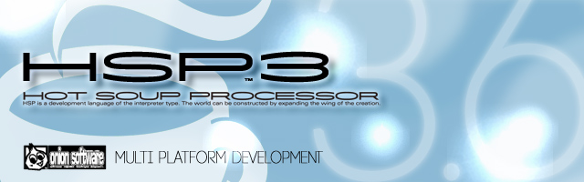

HSP : Hot Soup Processor ver3.6 / onion software 1997-2021(c)
HSP3 Windows
- 概要
- 動作環境
- パッケージ構成
- 初めて使用する場合
- インストール
- アンインストール
- デモンストレーション
- HSP3.5からの変更点
- スクリプトエディタ
- HSPアシスタント
- HSPTVブラウザ
- HSP Docs Library(HDL)
- 著作権、ライセンスについて
概要
HSP Windowsは、Microsoft Windows上で動作するHSP3の開発環境です。
スクリプトによるプログラミングが可能なHSP3ファミリーの中で、最も標準的な開発環境となります。
このドキュメントでは、Windows版に固有の機能や起動方法について説明しています。
基本的な説明は、HSP3概要をご覧ください。
動作環境
- Microsoft Windows 2000、XP ( NT4.0以降を含む )、Vista、7、8、8.1、10
HSP3.6は32bitアプリケーションの動作するほぼすべてのWindowsで動作します。
また、Windows 7、8、8.1、10及びVistaの64bit(x64)版での動作を確認しています。
Windows 2000より以前のバージョンでは、標準の「HSPスクリプトエディタ」は動作致しません。 簡易版エディタ(hsed3le.exe)をご使用頂けば、標準的なHSPの機能はご使用頂けます。 また、InternetExplorer4.0以降がインストールされているWindows 95上でも動作可能ですが、保証外となります。 日本語版以外のWindowsでは、標準の「HSPスクリプトエディタ」で文字化けが発生することがあります。 その場合は、HSPTV!サイトのダウンロードリストから、対応するツールを選択することができます。
640×480以上の解像度と、256色以上の表示が可能なディスプレイが必要になります。 必要なメモリ量は表示する画像サイズなどで変化します。
HSPは単体で動作します。標準的な機能において、追加のDLLやランタイムをインストールする必要はありません。
パッケージ構成
HSP3.6フルセットは、オープンソースとして公開されているOpenHSP技術をベースに、 Windows上で手軽にプログラミングを楽しむことができるよう構成されています。 スクリプトを記述するための「HSPスクリプトエディタ」を始めとして、 視覚的にプログラムの動作を確認することができるツール「Peas」、 ユーザーが作成したコンテンツを楽しめる「HSPTVブラウザ」などを備えた、 初心者から上級者まで、あらゆる場面で幅広く使うことのできる統合的な開発環境となっています。
初めて使用する場合
HSP3を初めて使用する方は、フルパッケージをインストール後に、プログラミング・マニュアルを読み使い始めてください。
HSP3の基本的な仕組みや使い方を解説しています。プログラミング初心者の方は、HSP入門も併せてご覧ください。
既に過去のバージョンをお使いの方は、HSP3.6 新機能ハイライトや、HSP3アップデートガイドが参考になります。
インストール
HSP3.6フルセットは、インストーラー付きのバージョンと圧縮ファイル版が用意されています。 インストーラーを起動するか、または任意のディレクトリにhsp36フォルダを解凍する ことで使用できるようになります。(推奨ディレクトリは、「c:\hsp36」です)
HSP3.6以前のバージョンが既にインストールされている場合は、以前のものをアンインストール してから、新しいバージョンをインストールすることを推奨します。 ただし、HSP3.6のインストーラーは、インストール先のフォルダ以外にファイルの追加を行ないませんので、 以前のバージョンと競合することはありません。(過去のバージョンと同時に利用することも可能です。)
Windows 2000以降(XP、Vista、7、8、8.1、10等)では、HSP3.6のインストールフォルダに書き込み権限が必要になります。 インストーラーのデフォルトディレクトリ(/HSP35)にインストールを行なった場合なども、 管理者権限を持ったユーザーで実行するようにしてください。
Windows Vista以降をお使いの方は、User Account Control (UAC) の機能により、 インストールの際に管理者権限を要求されることがあります。 この時は、管理者権限で処理を続行して頂くようお願い致します。
アンインストール
インストーラーによりHSPのインストールを行なった場合は、付属のアンインストーラーによりプログラムの削除が可能です。 手動でインストールを行なった場合は、フォルダをまとめて削除することでアンインストールすることができます。
Windows Vista以降のOSで、Program Files以下にHSPがインストールされている場合は、 HSPTVブラウザやドキュメントビューアーの追加データが、バーチャルストアに残される可能性があります。 以下のデータを合わせて削除することで、追加のファイルを含めたアンインストールを行なうことができます。
C:\Users\（ユーザー名）\AppData\Roaming\Hot Soup Processor C:\Users\（ユーザー名）\AppData\Local\VirtualStore 以下のHSPインストールフォルダ
標準のスクリプトエディタは、標準で以下のレジストリに設定を保存します。必要な場合は、こちらの削除も行なってください。
HKEY_CURRENT_USER\Software\OnionSoftware\hsed3_3
デモンストレーション
まず、「スタートメニュー」のプログラムグループから「Hot Soup Processor 3.6」→「サンプルデモ」 を起動させてみてください。HSPのサンプルデモが始まります。 （メニュー登録されていない場合は、展開されたディレクトリにある、HSP3DEMO.EXEを起動させてみてください。）
このデモは実際にHSPを使って動作しています。メニューから項目を選択することで、 色々なデモンストレーションを見ることができます。
また、「スタートメニュー」のプログラムグループから「Hot Soup Processor 3.6」→「HSPアシスタント」 を選択することで。HSPサンプルスクリプトを閲覧するための「HSPアシスタント」が起動します。 「HSPアシスタント」で、「Sample」のボタンを押してからファイルを選択するだけで、 すぐに実行・閲覧することができます。
HSP3.5からの変更点
HSP3.6では、上位互換となる形で機能の修正と追加を行なっています。 HSP3.5で動作していたスクリプトは、ほとんどの場合、修正することなくHSP3.6で動作させることができます。 詳しくは、HSP3.6 新機能ハイライトを参照してください。
HSP3は、以前までの仕様とプログラムを大幅に見直し、再構築したHSPの最新バージョンです。 ver2.61までに培われた親しみやすさ、習得のしやすさ、シンプルさといった資産を継承しながら、 より幅広い応用と汎用性を持たせた環境を提供すべく開発されています。
以前のバージョンからの変更点や移行のための手順は、 HSP3アップデートガイドを参照してください。
スクリプトエディタ
HSPスクリプトエディタ(HSED3.EXE)は、HSPのスクリプトを手軽に編集、実行 することができる専用のテキストエディタです。 余計な準備をすることなく、直接スクリプトを書いてF5キーを押すだけで実行させることができます。
キーワードのヘルプ参照(F1キー)や、かんたん入力などの支援機能も豊富に搭載されています。
英語版Windowsを使用しているユーザー向けに英語版スクリプトエディタ(HSED3_EN.EXE)も同梱されています。インターフェースが英語になっていること以外は、通常のスクリプトエディタと同様にお使い頂けます。
スクリプトエディタの使用方法、スクリプトの詳細については、 プログラミングマニュアルをお読み下さい。
HSPアシスタント

HSPアシスタントにより、命令の検索、サンプルスクリプトの参照、ネットワーク素材取得などを行なうことができます。
「スタートメニュー」のプログラムグループから「Hot Soup Processor 3.6」→「HSPアシスタント」 を選択することで、HSPアシスタントが起動されます。 (メニュー登録されていない場合は、展開されたディレクトリにある、HSPAT.EXEを起動させてみてください。)
HSPアシスタントについての詳細は、別途マニュアル（hspat.htm）を参照してください。
HSPTVブラウザ

HSPTVブラウザを使用することにより、オンライン上のHSP情報、最新ソフトウェアを手軽に ダウンロードして楽しむことができます。
「スタートメニュー」のプログラムグループから「Hot Soup Processor 3.6」→「HSPTVブラウザ」 を選択することで、HSPTVブラウザが起動されます。 (メニュー登録されていない場合は、展開されたディレクトリにある、HSPTV.EXEを起動させてみてください。)
HSPTVブラウザは、ネットワークに接続して自動的に最新の情報へ更新します。 必ずネットワークへの接続と、設定の確認を行なってください。
HSPTVブラウザについての詳細は、別途マニュアル（hsptv.htm）を参照してください。
HSP Docs Library(HDL)

HSP Docs Library (HDL) は、HSP のドキュメントをすべてまとめて 検索・閲覧 するためのブラウザです。 従来のヘルプブラウザに替わって使用することができるドキュメントのビューアーです。 HSP Docs Library (HDL) により、HSPのヘルプだけでなくドキュメント及びサンプルスクリプトも含めた 統合的な検索とシームレスなリンクが行なわれ、スクリプトの開発効率を高めます。
「スタートメニュー」のプログラムグループから「Hot Soup Processor 3.6」→「ドキュメントブラウザ」 を選択することで起動されます。 （メニュー登録されていない場合は、展開されたディレクトリにある、HDL.EXEを起動させてください。）
HSP Docs Libraryについての詳細は、別途マニュアル（hdl_usage.htm）を参照してください。
著作権、ライセンスについて
HSP3.6フルセットは、「HSP開発システム」と「追加コンポーネント」で構成された複合パッケージとなっています。 HSP開発システムは、開発の中心となる要素で以下の項目を指します。
- HSPスクリプトエディタ(hsed3.exe、hsed3_en.exe、hsed3le.exe)
- デバッグ実行ランタイム(hsp3.exe、hsp3cl.exe、hsp3debug.dll)
- HSP拡張ランタイム(hsprt、hsp3c.hrt、hsp3cl.hrt)
- HSPコードコンパイラ(hspcmp.dll)
- HSP3Dishシステム(hsp3dish.exe、hsp3dh.exe、hsp3cnv.exe)
- HSPTVブラウザ(hsptv.exe)
- Peasエディタ(ahtman.exe)
HSP開発システムに含まれるファイルは、BSDライセンスのもと自由に添付・複製・改編・再配布することが できます。その際にはHSPのライセンス表記(hsplicense.txt)を明示するようにしてください。
（HSPを使って作られた実行ファイルでは、このライセンスは適用されません。 あくまでも、HSP開発システムに含まれるファイルをそのまま公開する場合に適用されます。 ユーザーが作成したオリジナルのソフトウェアに関するライセンスについては、 「HSPによって作られたソフトウェアのライセンスについて」の項目を参照してください。）
（ライセンス表記の明示は、配布物の中にhsplicense.txtを含めるか、またはドキュメント内に hsplicense.txtと同じ内容を含めるようにしてください。企業内や学校内などでの利用は 無償として扱って頂いて構いません。）
HSP開発システムは、基本的に無保証で提供されますが、商利用に関するサポートなどは、 onion software(onitama@onionsoft.net)までメールにて連絡を頂ければ、 検討させていただきます。
HSP開発システムの著作権はonion softwareにあります。 onion softwareは本プログラムによって生じた、いかなる損害についても保証いたしません。 自己の責任の範囲で使用してください。
追加コンポーネントは、開発の補助と利便性を高める要素で以下の項目を指します。 追加コンポーネントの著作権とライセンスは、それぞれ権利者が異なります。 詳しくは、それぞれのドキュメントを参照してください。
- HSP Docs Library (doclib/HSP Docs Libraryフォルダ内のreadme.txtを参照)
- d3module (doclibフォルダ内のd3module.txtを参照)
- Artlet2D (doclibフォルダ内のArtlet2D.txtを参照)
- SQLele (doclibフォルダ内のSQLele.txtを参照)
- OBAQプラグイン (doclibフォルダ内のobaq.txtを参照)
- HSPDXプラグイン (doclibフォルダ内のhspdx.txtを参照)
- HSPCVプラグイン (doclibフォルダ内のhspcv.txtを参照)
- HGIMG3プラグイン (doclibフォルダ内のhgimg3.txtを参照)
- HGIMG4プラグイン (doclibフォルダ内のhgimg4.htmlを参照)
- HSPOGGプラグイン (doclibフォルダ内のhspogg.txtを参照)
- HSP3IMPプラグイン(doclibフォルダ内のhsp3imp.txtを参照)
以下に示された追加コンポーネントは、onion softwareが著作権を保有していますが、 BSDライセンスのもと自由に添付、複製、改編、再配布することができます。 再配布は、有償・無償を問わず行なうことができ、onion softwareの著作権表示義務もありません。 以下の追加コンポーネントとともに配布されたオリジナルのソフトウェアに対して onion softwareが著作権を主張することはありません。
- HSPTV素材データ(/hsptv)及びそのサンプルスクリプト
- HGIMGプラグイン (hgimg.dll、hgimgx.dll)及びそのサンプルスクリプト
- HSPDAプラグイン (hspda.dll)及びそのサンプルスクリプト
- HSPDBプラグイン (hspdb.dll)及びそのサンプルスクリプト
- HSPEXTプラグイン (hspext.dll)及びそのサンプルスクリプト
- HSPSOCKプラグイン (hspsock.dll)及びそのサンプルスクリプト
- HSPINETプラグイン (hspinet.dll)及びそのサンプルスクリプト
- HSPPRINTプラグイン (hspprint.dll)及びそのサンプルスクリプト
- HSP基本サンプルスクリプト(sample/basicフォルダ内のスクリプト)
- COMサンプルスクリプト(sample/comobjフォルダ内のスクリプト)
- ゲームサンプルスクリプト(sample/gameフォルダ内のスクリプト)
- HGIMGサンプルスクリプト(sample/hgimgフォルダ内のスクリプト)
- HGIMG3サンプルスクリプト(sample/hgimg3フォルダ内のスクリプト)
- HGIMG4サンプルスクリプト(sample/hgimg4フォルダ内のスクリプト)
- HSPCLサンプルスクリプト(sample/hspclフォルダ内のスクリプト)
- HSP3.6サンプルスクリプト(sample/new36フォルダ内のスクリプト)
- HSP3UTFサンプルスクリプト(sample/hsp3utfフォルダ内のスクリプト)
- HSP3Dishサンプルスクリプト(sample/hsp3dishフォルダ内のスクリプト)
- スクリーンセーバーサンプルスクリプト(sample/ssaverフォルダ内のスクリプト)
- HSPプログラミングマニュアル等HSPの各種技術資料(doclib/hspsdkフォルダ内)
以下に示されたファイルは、HSPフルセットに限って配布を許可されているものです。 単体での複製、改編、再配布は許可していませんので、ご注意ください。
- HSPデモンストレーションのデータファイル(sample/demoフォルダ内のデータ)